| Brother Dan & Tracie and his daughter
Kaitlyn & her husband Strite have all bought in as owners of Montana
Wilderness Lodge & Outfitting. We had never been there, so
we joined Larry for a long weekend up there. It's located at the
edge of the Bob Marshall Wilderness. It's a LONG drive up along the
Hungry Horse Reservoir, but so nice once you get there. They have a
bunch of Instagram
pictures here. (Be warned, there's a lot of dead animal
photos!) |
|
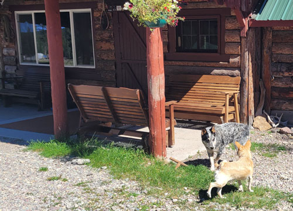 |
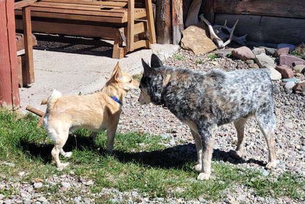 |
| Buddy making friends with one of the lodge dogs. | This is his "I'm tough" stance. |
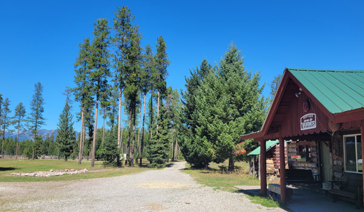 |
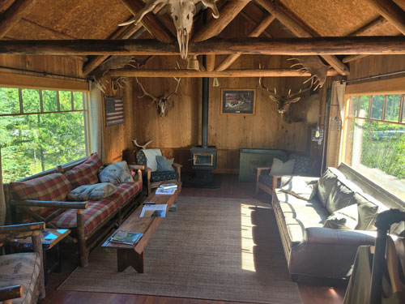 |
| A view of the main lodge and the entry driveway. | Inside the lodge. |
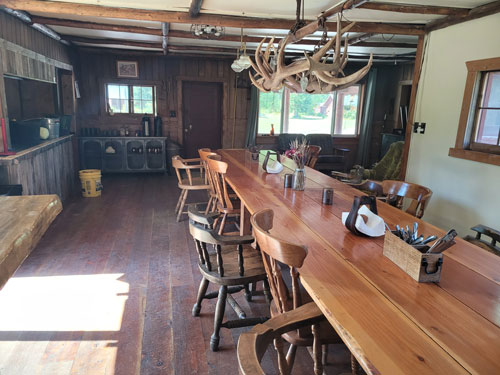 |
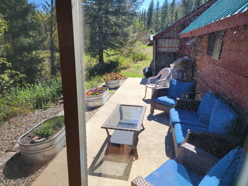 |
| The giant dining table. | The nice outdoor patio, I was too lazy to open the screen door to take my picture! |
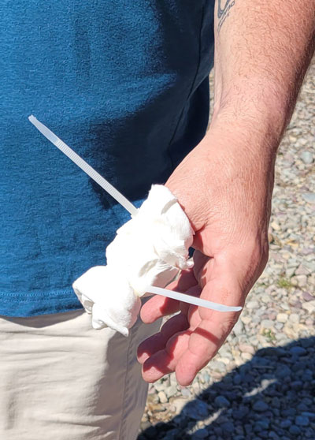 |
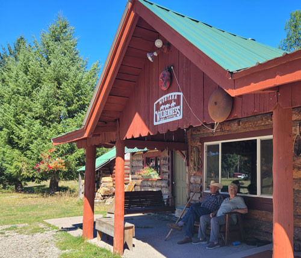 |
| A friend stopped by and we had to admire his first aid skills. | Dan & Rose relaxing on the porch glider. |
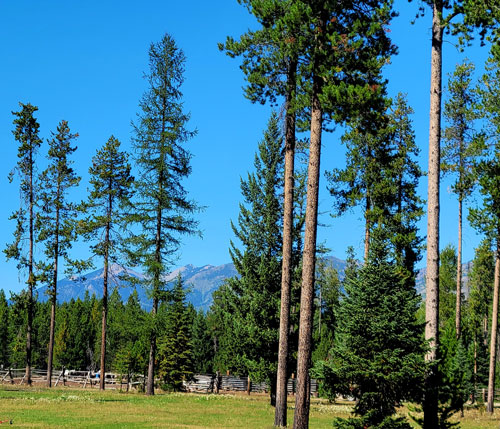 The view from the lodge building. |
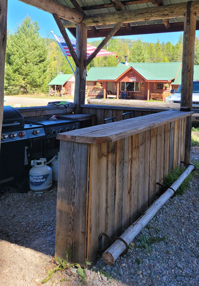 |
| The outdoor kitchen | |
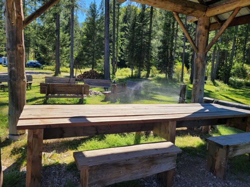 |
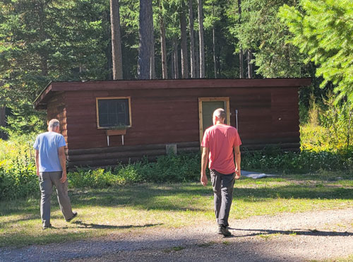 |
| Outdoor eating area and fire ring in the background. | Here we tour the many cabins they have on site. |
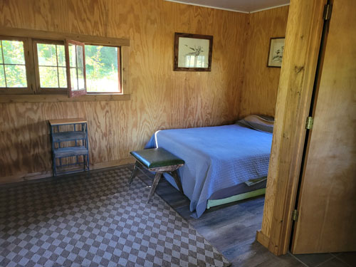 |
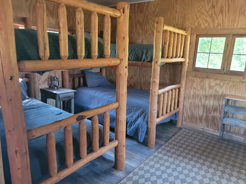 |
| A lot of the trips are spent camping so the cabins are basic, but nice. | This one sleeps six! |
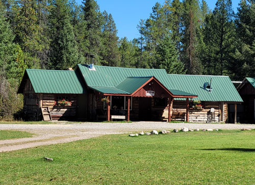 Looking back at the lodge building. |
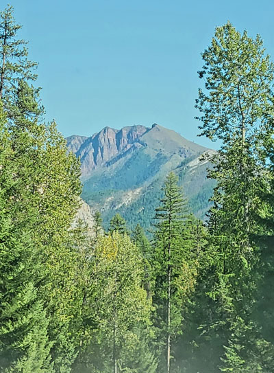 |
| Views along the drive to Meadow Creek Gorge. | |
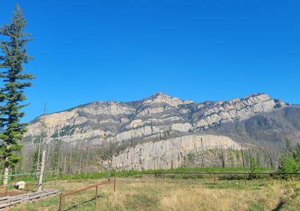 Where we parked before walking down to the gorge. It's also the
shared wrangler corral |
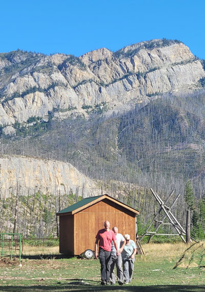 |
| A line of Casazzas. | |
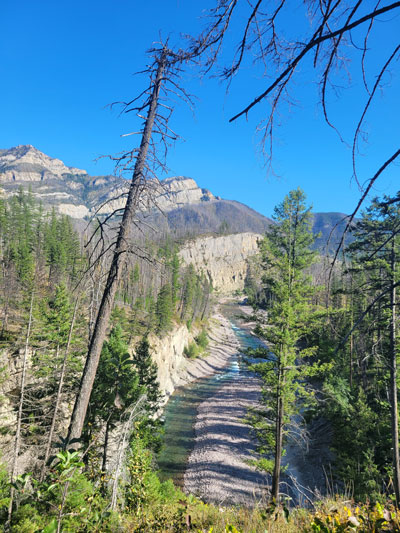 |
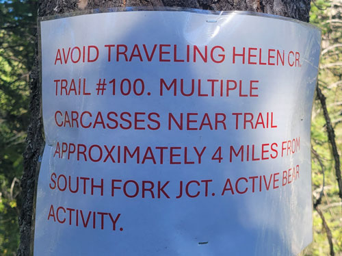 Always good to know about bear activity. |
| Looking down at Meadow Creek? Just guessing on the name because it runs through Meadow Creek gorge. |
|
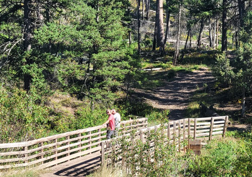 The stock all use this bridge when they go out into the
backcountry. Here Eric & Larry |
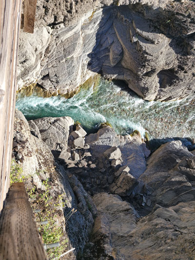 |
| Looking down into the gorge. | |
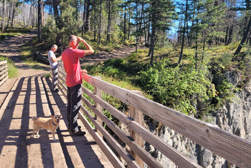 Buddy prefers to stay in the center of the bridge. |
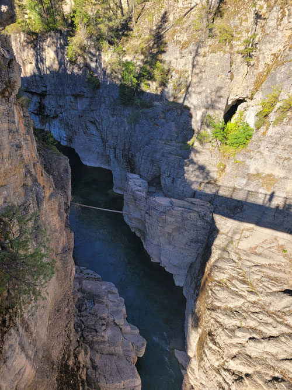 |
| The gorge on the other side. A tree is wedged between the two sides.
Spring runoff will knock that loose! |
|
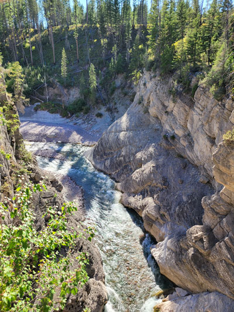 |
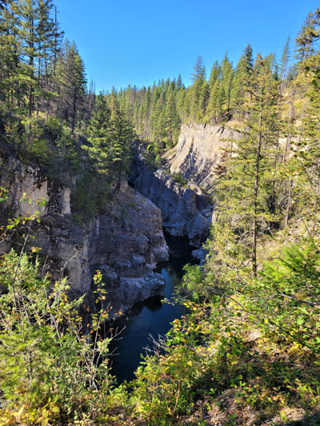 |
|
It's really stunning to see in person. |
|
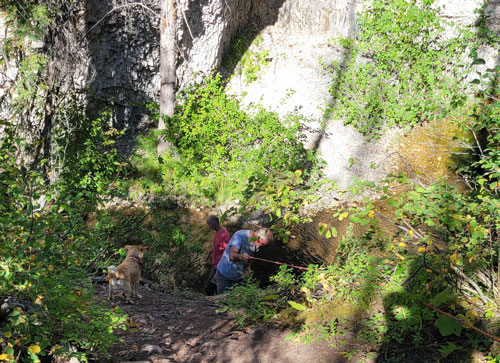 The guys going to check out a small waterfall, mostly dried up
now. |
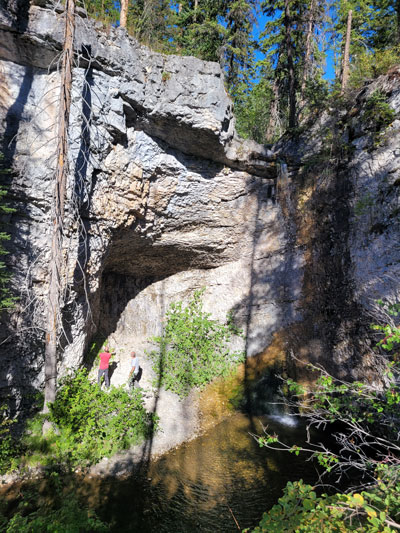 |
| The guys checking out the small cave and the late-season waterfall. | |
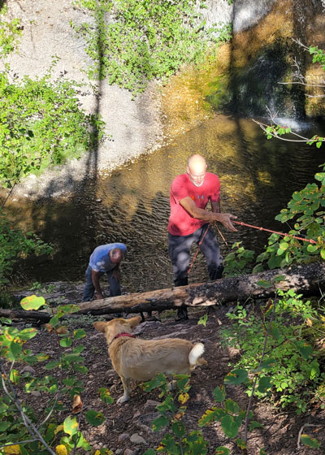 |
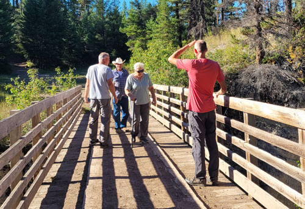 Dan & Rose have caught up to us now. |
| Buddy is happy to see them returning, he didn't want to follow! | |
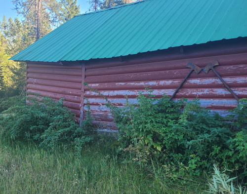 A barn at the lodge, it's got a bit of a sway to it! Those old axes are cool - all one piece. |
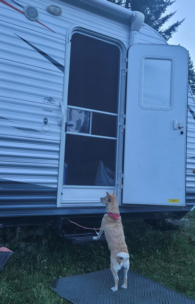 |
| Buddy is monitoring the dinner preparation activity in Rose's camper. | |
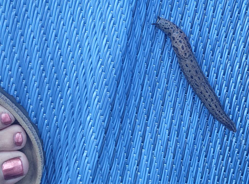 |
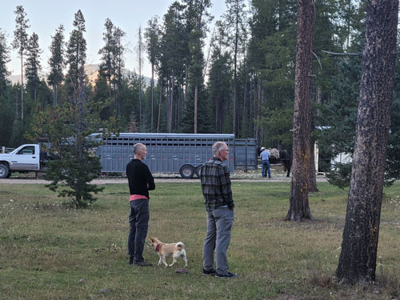 |
| A giant slug on our camper entry mat. I have never in my life seen such a big one! | And the outfitters have returned. They'd been on a 2 day trip in the
wilderness repairing the corrals that are way out in the woods. They were bushed! |
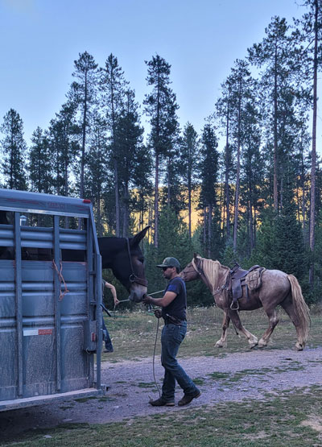 |
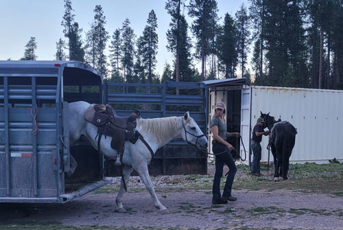 Kaitlyn. |
| It took ages to unload all the horses and mules, strip their tack, and turn them out. This is Strite, Kaitlyn's husband. |
|
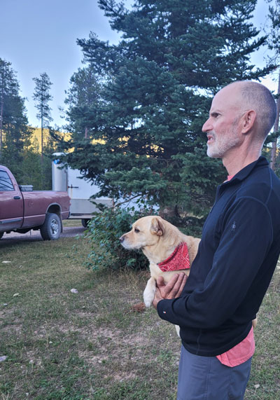 |
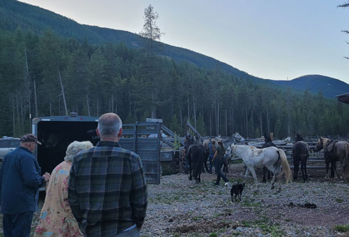 Spectators, admiring the team at work. |
| The outfitter dogs all know how to behave around horses & mules, Buddy however, gets carried. |
|
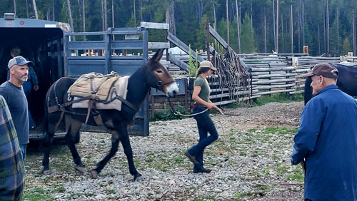 Dan Jr., Kaitlyn, and Dan Sr. |
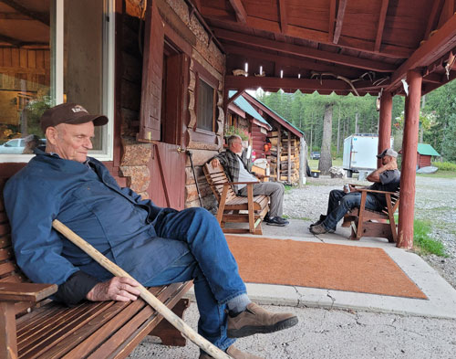 |
| Dan Sr. grabs a cat nap while Larry & Dan chat on the porch. | |
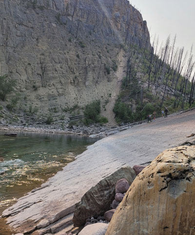 |
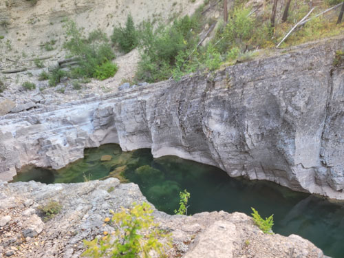 We hung with them long enough to see some beautiful sights. |
| The next day we tried to follow Dan & Tracie & Lane on a
fishing excursion. Larry kept up with them, but it was too advanced for me! Eric stayed back with me when it got too much for my skill set. |
|
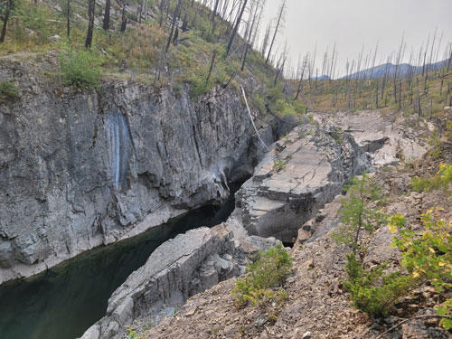 A smaller gorge, which I'm told gets really impressive in spring. |
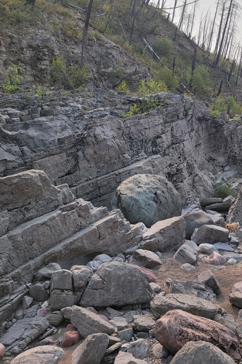 |
| That huge round rock is trapped in a small area, during spring runoff
all of this is under raging water, so I'm sure it rolls around getting more and more polished each year. |
|
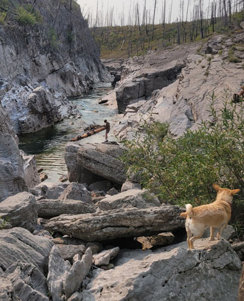 |
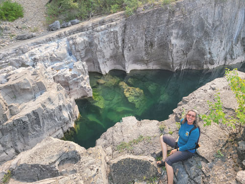 I loved looking down into that beautiful clear water. |
| Lane is fishing up ahead, but this is as far as I went. | |
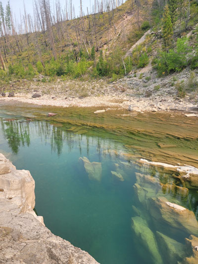 |
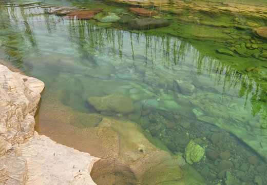 There is a big bull trout in this picture! |
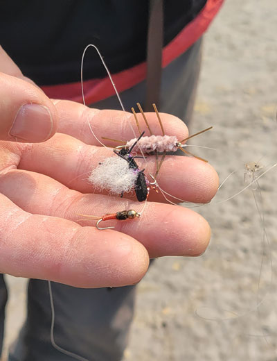 |
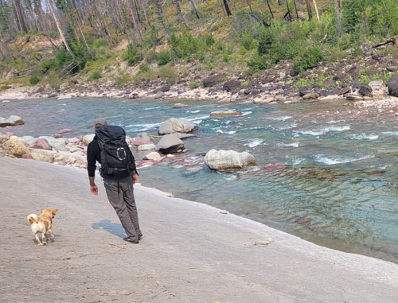 My boys going back across that super slanted rock. |
| Brodie loves to find flies & lures, here Eric & I find 3 at one time! | |
|
The sign for Strite & Kaitlyn's business back at the corrals. |
|
| Leaving the gorge area, we had to pull off the road for one last picture. | |
| Next we stop at the big river, the South Fork of the Flathead, for pebble throwing. | Back at the lodge, Eric makes friends. |
| They seem to like it when you dig deep into their ears. I didn't try it for myself. | Some more of the little cabins. Larry used one of them. |
| Dan Jr., Larry, and Eric - out for a walk. | Strite has an engineering problem in that the spring-fed water system
provides too much water. The uncles enjoyed trying to help solve the issue. |
|
Dan ringing the dinner bell. Tracie & Kaitlyn & Strite put on a wonderful meal for us all. |
|
| Beautiful Scout. He loves Kaitlyn even more than Strite does! | |
|
The boys were looking at all those fish just waiting for a fishing lure. |
|
| The next day we went out exploring with Larry. Here we are at Spotted Bear campground. |
|
|
Next we crossed the swinging bridge. That's Larry on it now. |
|
| Looking back at the rocks where we had just been standing. | |
|
Buddy is very afraid of swinging bridges, but he also won't stay tied
up at the end, so |
|
| I don't know why he finds this iffy!! | |
| Larry, looking at more and more fish. | Buddy, wondering why we can't see the danger as clearly as he does. |
| See? He's not any happier when we leave him on the side. Swinging bridges are dumb. | Next we go to Spotted Bear Falls, it is an amazingly beautiful stretch of river. Gorgeous! |
|
Buddy, not sure if he should hang back with me or run ahead to catch up to Eric. |
|
| Spotted Bear Falls looking upriver. | |
| This is a natural swimming pool. Eric took a dip in it, but we can't show that here! | |
|
Trying for the big bull trout that were hanging out down there. |
|
| Larry caught a fish! | |
| Larry is nearly 60 and still thinks it's a good idea to see if he can cross the creek on that log! | Me, I sat down and threw pebbles for Buddy until my arm was tired. |
| Next we toured another outfitter place, which has a restaurant and an amazing patio!! | This is on the drive out, when we stopped for a comfort break. |
| Another view on the drive out. It is a gorgeous part of the world for sure. | |